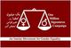

پذيرش > تریبون > کمپین یک میلیون امضا؛ پروندهای که بسته شد یا پروژهای که ادامه دارد
 سالگرد هفتم سالگرد هفتم

 کمپین یک میلیون امضا؛ پروندهای که بسته شد یا پروژهای که ادامه دارد کمپین یک میلیون امضا؛ پروندهای که بسته شد یا پروژهای که ادامه دارد
5 شهریور 1392 - نفیسه آزاد - نوشین کشاورزنیا - نسخه قابل چاپ
تغییر برای برابری: امسال، هفتمین سالگرد اغاز به کار کمپین یک میلیون امضاست. کمپینی که یکی از بزرگترین فعالیتهای جنبش زنان ایران در سالهای اخیر بود. اما شرایط اجتماعی و سیاسی از یک سو و مختصات درونی جنبش زنان از سوی دیگر باعث شده که کمپین به سان پروژهای با اینده و سرنوشت مبهم در ساحت جنبش زنان باقی بماند. سایت تغییر برای برابری، از ابتدا به منظور انعکاس مطالب مرتبط با کمپین یک میلیون امضا متولد شد. وظیفهای که این روزها، با توجه به شرایط کمپین با ابهاماتی روبرو است. در نتیجه بر ان شدیم تا در هفتمین سالگرد آغاز به کار کمپین، با باز کردن دوباره ی این بحث، فضایی فراهم کنیم تا همهی علاقمندان نظرات خود را در این زمینه ابراز کنند، شاید رسیدن به یک برایند جمعی امکان پذیر باشد. بنابراین از همهی دوستان و همراهان کمپین می خواهیم چنانچه در این زمینه بحث یا نظری دارند برای سایت تغییر برای برابری ارسال کنند و تاکید می کنیم نظرات نویسندگان مطالب، نظرات شخصی انهاست.
*****************************************************
در پنجم شهریور ماه 1385 پروژه ای با عنوان کمپین یک میلیون امضا برای تغییر قوانین تبعیض آمیز به همت گروه بزرگی از فعالان جنبش زنان آغاز شد. ایده اولیه این طرح که از کمپینهای مشابهی چون کمپنی به همین نام در مراکش گرفته شده بود، حاصل ساعت ها بحث و نشست فعالان حقوق زنان و بررسی اجرای این طرح در بستر جامعه ایران بود.
آغاز به کار این کمپین همزمان بود با شروع به کار دولت اصول گرای احمدی نژاد. تشدید اقدامات امنیتی پیشین، سخت گیری و برخوردهای خشونت آمیز و فراقانونی با فعالان جنبشها از جمله جنبش زنان موجب شده بود که بسیاری از گروه ها از فعالیت باز بمانند و یا فعالان آنها تحت فشار قرار بگیرند. شبکه کمپین برای فعالیت در چنین عرصه ای به میدان آمد.
کمپین یک ملیون امضا قصد داشت با جمع آوری یک میلیون امضا از زنان و مردان برابری خواه در سراسر کشور و ایرانیان مقیم خارج از ایران در فرمهایی که برای این کار طراحی شده بود، گفتمان برابری جنسیتی را در جامعه ارتقا دهد، صدای اعتراض خود را نسبت به برخی از قوانین تبعیض آمیز به گوش همگان برساند، و با ارائه امضاها به مجلس درخواست تغییر قوانین را از مجلس به مثابه نهاد قانونگذار و مسئول در این زمینه مطرح کند.
ساختار حرکت در پروژه کمپین افقی بود. امضاها از طریق گفتگوی چهره به چهره با مردم از خانه تا خیابان، در فضاهای خصوصی و عمومی جمع آوری می شد، هرامضا کننده خود عضوی از کمپین می شد و در صورت تمایل می توانست دایره مشارکت اش را افزایش دهد و خود نیز به جمع آوری امضا بپردازد و برای این کار ابتدا در کارگاه های حقوقی و آموزشی که به منظور اشنایی داوطلبان با موارد حقوقی و همچنین شیوههای جمع اوری امضا تدوین شده بود، شرکت کند. بنابراین علاوه بر آگاهی جنسیتی، از دیگر تاثیرات این حرکت، جلب توجه و مشارکت عموم نسبت به تغییر تبعیض های قانونی علیه زنان بود.
نحوه اجرای این پروژه در فرایند حرکت مورد ارزیابی قرار می گرفت و توسعه می یافت. در ابتدا فعالان جنبش زنان و دیگر علاقمندان کمپین، به جمع آوری امضا و انعکاس رسانهای ابتکارات خود در این زمینه میپرداختند، با بزرگ شدن دامنه کار، اضافه شدن شهرهای مختلف به تدریج کمیتهها و کارگروه هایی برای پیشبرد کار شکل کرفت . از جمله: کمیته رسانه، آموزش، مستندسازی، مالی، شهرستانها، هماهنگی، روابط عمومي، داوطلبان و سپس کمیته مادران و مردان و همین طور کارگروه هایی چون کارگروه جمع اوری امضا .
فعالیت در کمیپن از ابتدا با محدودیت هایی رو به رو بود اما به تدریج با گسترش فعالیت، دامنه محدویت های امنیتی به بازداشت فعالان هم منجر شد. به عنوان مثال اولین دستگیری های فعالان کمپین در همان ماههای نخستین و در هنگام جمع اوری امضاها در مترو رخ داد، روندی که در نهایت به 50 بازداشتی رسید. سپس به کارگاه آموزش کمپین در شهرستان خرم اباد حمله شد و به تدریج جو ارعاب و تهدید فعالانی که خانه های خود را در اختیار کارگاهها و گردهمایی های دیگر کمپین قرار می دادند، شدت گرفت.
در سال دوم علاوه برای دشواری های امنیتی، كمپين با تنشها و مشكلات دروني نيز روبه رو شد. تاكيد بر ساختار رهبري افقي در حركت اجتماعي چون كمپين از آغاز يك ارزش شمرده مي شد. از جمله تدابير ساختاري براي اجراي اين اصل، وجود كميته اي به نام كميته هماهنگي بود كه افراد در آن بصورت چرخشي انتخاب مي شدند. در واقع هر يك از كميته هاي ديگر، يك عضو و يا نماينده در اين كميته داشت که همان نماینده نیز در هر کمیته به صورت چرخشی انتخاب میشد. اين كميته حلقه واسط و هماهنگ كننده بخشهاي مختلف كمپين بود. بنابراين تصميم گيريهاي مختلف با توجه به حضور نمايندگاني از بخشهاي مختلف كمپين در آن و اين فرض كه اعضای اين كميته تصميم را در گروههاي فعاليت خود مطرح مي كنند و به بحث مي گذارند، گرفته مي شد.
هدف از اين شيوه، برقراري روابط دموكراتيك و نوعي رهبري و سلسه مراتب افقي بود و عملی کردن آن آسان نبود و نیازمند تجربه ای عظیم در کار حمعی بود. به رغم وجود گروه هماهنگی، برخی از کمیته ها اذعان داشتند که كميته هاي کمپین حكم جزيره هاي جداگانه اي را دارند و امكان نظرخواهي و مشورت در تصميم گيريها در جمع وسيع و رو به گسترش كمپين امكان پذير نیست. بعدها با افزایش اختلاف نظرها نقد هایی مبتنی بر این که فعاليت های کمیته هماهنگی صوري است و برخي از تصميمات و تعيين سياستهاي كمپين عملا در جاهاي ديگري صورت مي گيرد، مطرح شد. اين امر باعث شد به تدريج صداهاي اعتراضي مبني بر اينكه تصميم گيريها و گردش اطلاعات در كمپين دچار مشكل شده است، شنيده شود. اعتراضها با تشکیل جلسه انتقادي در آذر ماه 1387 از سوي فعالان منتقد و دعوت اعضاي فعال كمپين تهران در اين جلسه به اوج خود رسید. این موضوع هم زمان بود با شدیدترین فشارهای امنیتی بر فعالان کمپین، به طوری که در همان زمان دو تن از فعالان کمپین،در زندان اوین به سر می بردند.
پس از جلسه انتقادی نیز ، دامنه اختلافات گسترش یافت؛ و در فضاي ترديد و شبهه هاي پدید آمده گروه-سایت مدرسه فمينيستي از سوي یکی از طرفین اختلاف که مسئولیت های زیادی هم در کمپین داشتند، یکباره سر بر آورد. بدین ترتیب، دامنه اختلافات به گسترش تضاد در کمپین منجر شد. مدرسه فمنیستی در ابتدا خود را بعنوان يك سايت مستقل زنان و سپس یکی از رسانه هاي كمپين نامید و طرح تشكيل هسته هاي خودبنياد براي اداره و راهبری كمپين را ارائه كرد. و بدین ترتیب دامنه تضاد بيش از پيش در کمپین افزایش یافت و به شهرستانهاي ديگر نيز كشانده شد.
اختلافات و بی اعتمادی های حاصل در میان فعالان، در كنار مشكلات امنیتی خارجي روز افزون، انرژي بسياري از فعالان اين حركت را گرفت و كمپين را به تدريج دچار افول كرد. هر چند جريان فعاليت و جمع اوري امضا كاملا متوقف نشد و اعضا با طرح ايده هاي مانند جمع اوري امضا بصورت گروهي مثلا در كوهستانهای اطراف تهران و ساير فضاهاي عمومي، یا با ایدههایی همچون تعریف هفتههایی با عنوان «هم پیمان با کارگران» یا «هم پیمان با معلمان» به قصد برقراری ارتباط با دیگر گروههای فعال اجتماعی تلاشهايي براي بهبود روند اين حركت جمعي انديشيدند اما شرايط به وجود امده، مجال چنداني براي فعاليت مستمر و يكپارچه باقي نگذاشت .
نزديك شدن به پايان دوره اول رياست جمهوري احمدي نژاد و اعتراضات فراگير سال 88 نسبت به انتخاب مجدد احمدي نژاد و شبهات مبني بر تقلب در انتخابات به جو بي اعتمادي نسبت به مراجع حكومت از جمله مجلس شوراي اسلامي كه محل ارجاع امضاها بود، دامن زد و فعالان را با اين چالش مواجه كرد كه در اين شرايط گفتگوي چهره به چهره با مردم و ترغيب آنها به جمع آوري امضا برای بيانيه كمپين توجيهي ندارد، دوره ركود نسبتا طولاني كمپين به علاوه مهاجرت فعالان جنبش زنان و ياران كمپين كه در ساير جنبشهاي اجتماعي هم فعال بودند، رمقي را براي ادامه كار منسجم و هدفمند كمپين باقي نگذاشت. در اين مدت جلساتي مبني بر آسيب شناسي كمپين در ميان گروههاي مختلف برگزار شد، تعدادي از فعالان پس از عبور از برخي از تنشهاي سابق در مواردی بصورت مقطعي، با هم يا جداگانه به راه اندازي فعاليتهاي ديگري در قالب برنامه هاي مناسبتي مشترك اقدام كردند. با اينحال پرسش هايي درباره سرنوشت اين حركت اجتماعي بزرگ باقي است.
کمپین یک میلیون امضا؛ دستاوردها و نتایج
نمی توان کتمان کرد که كمپين یک میلیون امضا دستاوردهاي قابل توجهي داشت و به طور نسبي به برخي از اهداف خود نيز رسيد. برگزاری کارگاههای متنوع و متعدد، عمومی کردن بحث برابری حقوقی برای زنان، ایجاد گفتمان برابری جنسیتی، مطالبه محوری و سازماندهی شبکهای از فعالین زنان حول یک فعالیت مشترک، دستاوردهایی است که نمی توان از آن گذشت. از دیگر دستاوردهای مثبت کمپین به موارد زیر نیز می توان اشاره کرد:
 تجربه مثبت كار گروهي چند نسل از فعالان حقوق زنان در كنار هم تجربه مثبت كار گروهي چند نسل از فعالان حقوق زنان در كنار هم
ارائه فرصت به دسته اي از زنان و مرداني كه دغدغه مساله تبعيضهاي جنسيتي را داشتند اما فضا و امكان فعاليت گروهي منسجم را نداشتند.
توانمندي و تربيت نسلي از فعالان جوان كه اكنون به عنوان سرمايه هاي جنبش زنان قابل اتكا هستند.
مشق تمرين دموكراسي در يك حركت اجتماعي بزرگ و تجربه گرانقدري كه در پايه ريزي طرح هاي ديگر قابل استفاده است.
تبدیل گفتمان برابری حقوقی و جنسیتی به مثایه یکی از گفتمان های مهم در جامعه
شناساندن چهره واقعي تري از زنان ايران دست كم در بخش جنبش حقوق زنان به فعالان ساير كشورهاي جهان و فراهم كردن زمينه برقراري ارتباط با آنها. در زمينه مي توان به اهدا چندين جايزه معتبر هم اشاره كرد از جمله جايزه سيمون دوبوار، جايزه فمنيست مجوريتي، جايزه نت شهروند گزارشگران بدون مرز به سايت تغيير براي برابري و ......
اما در عین حال باید به این موضوع مهم نیز نظر داشت که کمپین در دسترسي به هدف عيني خود يعني جمع اوري يك ميليون امضا و ارائه ان به مجلس دست كم تا اين لحظه ناموفق بوده است. در تحلیل چرایی این عدم موفقیت، دلایل بسیاری از سوی فعالان کمپین ذکر شده است، از جمله: نادرستی برآورد اولیه ی سامان دهندگان کمپین، به این معنی که جمع اوری یک میلیون امضا در واقع به معنای آن است که از هر 70 تا 75 نفر ایرانی یک نفر بیانیه کمپین را امضا کرده باشد که با توجه به عدم دسترسی و پتانسیل محدود فعالان کمپین، کار بسیار دشوار و زمان بری است. مسئله ی دیگر فشارهای امنیتی بود که از همان ابتدا فعالان کمپین را محدود کرد، بازداشت به جرم جمع آوری امضا یا فعالیت در کمپین، تهدید و احضار و زندان تا حد زیادی سرعت فعالیتها را در کمپین کند کرده و فضای فعالیت در این حوزه را امنیتی کرد. همچنین این نقد مطرح بود که سرمایه گذاری فعالان کمپین در حوزههای دیگری همچون اموزش یا رسانه بیش از تمرکز بر جمع آوری امضا بود.
سرنوشت کمپین؛ابهام یا پرسش
اما امروز و بعد از گذشتن هفت سال و به ویژه کم حرکتی 4 سال گذشته، با همه فرازها و فرودها ، بحث ها و جدلها، دستاوردها و از دست رفته ها و با همه بی حقوقی ها و تازگی همچنانی مطالبات حقوقی در کمپین، سوال هایی پیش روی فعالان باقی مانده است. کمپین چه کرد؟ با کمپین چه باید کرد؟ آیا دوران کمپین به سر رسیده است ؟ آیا خواسته هایش محقق شده ؟ آیا باید مسیر گذشته را ادامه داد؟ اساسا چه کسی باید در مورد سرنوشت کمپین یک میلیون امضا تصمیم بگیرد؟ آیا اصلا لازم است در مورد کمپین تصمیمی گرفته شود؟ تکلیف امضاهای جمع آوری شده چه خواهد بود؟ آیا فرد یا گروهی صلاحیت آن را دارد که در مورد نحوهی ادامه ی کار کمپین تصمیم گیری کند؟ تکلیف اعتماد امضا کنندگان بیانیه به فعالان کمپین چه خواهد بود؟ امضاهایی که به مثابه سرمایهای در اختیار بخشی از جنبش زنان ایران است چه سرنوشتی خواهند داشت؟
آنچه مسلم است کسی نمیتواند دیگران را از جمع آوری امضا و یا فعالیت تحت عنوان کمپین یک میلیون امضا بازدارد، همان طور که هنوز هم کم و بیش تعدادی امضای جدید به دست فعالان قدیمی کمپین می رسد. اما به نظر می رسدکه کمپین یک میلیون امضا به شکل گذشته اش از دستور کار اصلی جنبش زنان ایران خارج شده است و شاید زمان آن رسیده باشد که در مورد آن بحث شود و اقداماتی صورت گیرد.هر چند باز کردن این بحث نیز با چالشهای بسیاری روبرو است.
کمپین یک میلیون امضا اتفاق مهمی در تاریخ جنبش زنان ایران بوده است، همه ی کسانی که در آن نقشی داشتند، در برابر سرنوشت آن مسئولند، مسئله این است که چه مکانیزمی می تواند فضای گفتگوی موثر در این زمینه را فراهم کند. برخی از حامیان اولیه ی کمپین از همان روز اول دیگر سراغی از کمپین نگرفتند، برخی بعدها اضافه شدند و تا آخر در کنار کمپین ماندند، انها که تنها امضا کردند، انها که بی انکه نامی داشته باشند امضا جمع کردند، انها که کارگاه برگزار کردند، انها که خانههایشان را در اختیار جلسات کمپین گذاشتند، آنها که روزهای زیادی در سرما و گرما پشت در دادگاهها و زندانها ماندند، انها که نوشتند و آنها که از تواناییهای مختلف خود برای پیشبرد کمپین استفاده کردند، چطور میتوان انها را مجددا در خرد جمعی و تصمیمات جمعی مشترک سهیم کرد؟
ما بیش از انکه در پی تصمیمی خاص باشیم، در پی طرح پرسشی هستیم که گمان میکنیم در مقابل جنبش زنان ایران است و باید دیر یا زود به آن پاسخ دهند و یا حداقل برای رسیدن به توافقی حداقلی در مورد آن بکوشند: کمپین یک میلیون امضا پروندهای است که بسته شده یا پروژهایست که همچنان ادامه دارد؟
سایت تغییر برای برابری همزمان با سالگرد هفتمین سال آغاز به حرکت کمپین یک میلیون امضا در صدد است بحث را باز کند و از همگان دعوت به مشارکت دراین بحث می کند. این گوی و این میدان برای همه ما.
ارسال به
بالاترین
،
توییتر
،
فریندفید
،
فیسبوک
در همين بخش :
 دهمین دورۀ مراسم تندیس صدیقه دولت آبادی ۱۳۹۲ دهمین دورۀ مراسم تندیس صدیقه دولت آبادی ۱۳۹۲
کارت پستالهایی به بهانهی هشت مارس و به یاد همهی مبارزین راه برابری
بیانیه بیش از 350 تن از مدافعان حقوق زنان به مناسبت روز جهانی زن؛ زنان هر روز فرودستتر میشوند
لباسی که برای تن ما دوخته اند! /اعظم بهرامی
چالشها و چشمانداز فعالیت مدنی زنان
ديگر بخش ها :
طرح یک میلیون امضا
|
مقالات
|
سایت نوشته ها
|
اخبار
|
گزارش كمپين
|
گفت و گو
|
علیه سکوت
|
كوچه به كوچه
|
نامه های شما
|
گزارش ویژه
|
گفتگو با اعضا
|
ویژه سالگرد کمپین
|
تصویر برابری
|
دل آرام علی
|
تریبون
|
مقالات
|
تاریخ شفاهی
|
خارج از چارچوب
|
کتابخانه
|
درباره کمپین
|
کمپین در شهرها
|
کمپین در بند
|
صدای تغییر
|
ویژه 22 خرداد
|
لایحه حمایت از خانواده
|
گالری
|
عشا مومنی
|
امیر یعقوبعلی
|
خدیجه مقدم
|
راحله عسگری زاده و نسیم خسروی
|
پروین اردلان،جلوه جواهری، مریم حسین خواه، ناهید کشاورز
|
زینب پیغمبرزاده
|
سعیده امین، سارا ایمانیان، محبوبه حسین زاده، ناهید کشاورز و همایون نامی
|
احترام شادفر
|
نسیم سرابندی زاده،فاطمه دهدشتی
|
وبلاگ مهمان
|
پرونده خرم آباد
|
دستگیری ها
|
مریم مالک
|
پرستو اللهیاری
|
مهرنوش اعتمادی
|
سمیه رشیدی
|
Other Languages
|
همراهان
|
«فراخوان کمپین ده روز با بهاره هدایت»
| English
|